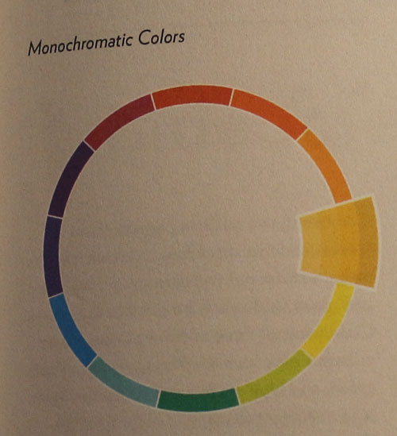

Læringsportfolio
Farveteori
Farver er opdelt i primære, sekundære, tertiære og komplementære. De primære farver er rød, blå og gul, de sekundære består af en blanding af to primære (grøn, orange, lilla), og de tertiære er en primær farve blandet med en sekundær farve.
Komplementære farver kan man finde på et farvehjul og består f.eks. af en primær farve og dens overfor liggende sekundære farve.
De kolde farver finder man på den blå/grønne side af farvehjulet, hvor de varme farver findes på den modsatte side altså på den rød/gule side af farvehjulet. Farver kan både harmonisere og organisere grafiske elementer og information.
CMYK
CMYK bruges til printede medier og består af en blanding af Cyan, Magenta, Yellow og en Key (black). CMYK er subtraktiv, de trækker lyset ud af hinanden ved blanding og bliver ved en blanding af cyan, magenta og yellow til black.
RGB
RGB farver bruges til skærm. De består af Red, Green og Blue, hver i 256 nuancer (0-255). Kombineret giver det 16 millioner farver. RGB er additiv, dvs. at disse farver ved blanding tilsætter lys og ved blanding af dem alle, bliver de til hvid.
Hue
Den farvetone eller kulør som man vil bruge. Farve i sin pureste form (f.eks. rød, blå, gul).
Saturation
Hvor meget man blander en farve med en gråtone, farven bliver mere og mere dæmpet. Den vil gå fra at være helt klar (ublandet), til, hvis man bliver ved at blande grå i, at være helt grå.

Brightness
Hvor meget ren sort eller ren hvid man blander i en farve. Farven bliver ved blanding enten lysere eller mørkere og hvis man bliver ved at blande, bliver farven til sidst helt hvid eller helt sort.
Farvesammensætning
Monokrom
Monokromatiske farver = En enkelt farve hvor man så bruger neutrale farver til at lave skygger (hvid eller sort laver lysere eller mørkere udgave af farven).

Analog
Analoge farver er typisk farver der ligger ved siden af hinanden.
Komplementær
To farver der ligger lige over for hinanden i farvecirklen.
Split komplementær
Her vælger man en farve og derefter en farve på hver side af dens (første farve) komplementærfarve.
Triader
Tre farver der ligger lige langt fra hinanden i farvecirklen.
Tetriader (dobbelt komplementære)
Fire farver som er komplementære.
Farvepsykologi og kultur
Farvepsykologi er kort fortalt, hvilke følelser en farve får frem i én. Det handler om hvilken betydning en farve har, men man skal huske at selvom en farve en en bestemt betydning der hvor man er, så kan det betyde noget helt andet i andre kulturer. F.eks. ville man i vesten forbinde farven hvis med renhed, uskyld eller ungdom, men i andre kulturer er hvis en farve der er forbundet med død og sorg.
Tidligere var farverne fastsat til nogle bestemte begreber, men nu er det mere flydende, da det er individuelt hvordan man føler for en farve. Man kan godt gå ud af rammerne, men man skal stadig passe på med om man vælger en farve som man associerer til noget dårligt/ulækkert.
Kilder:
- PDF om farvelære, udleveret af Carsten Bogner
- Jamie Steane: The principles and processes of interactive design - kapitel 3, side 66-75
- Richard Poulin: The language of graphic design – kapitel 6, side 58-71